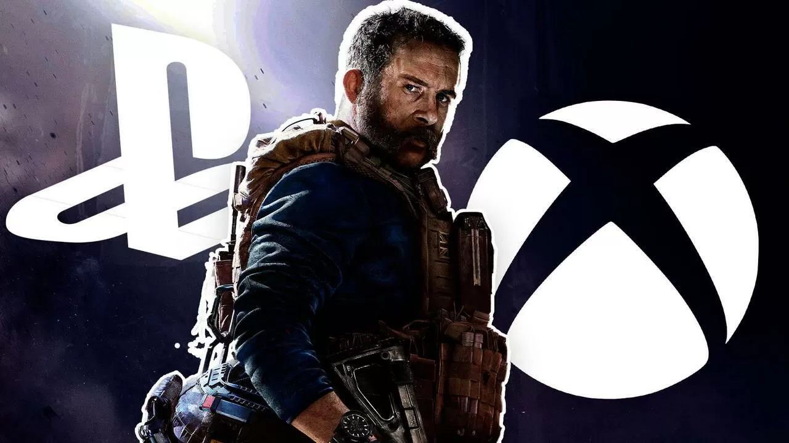
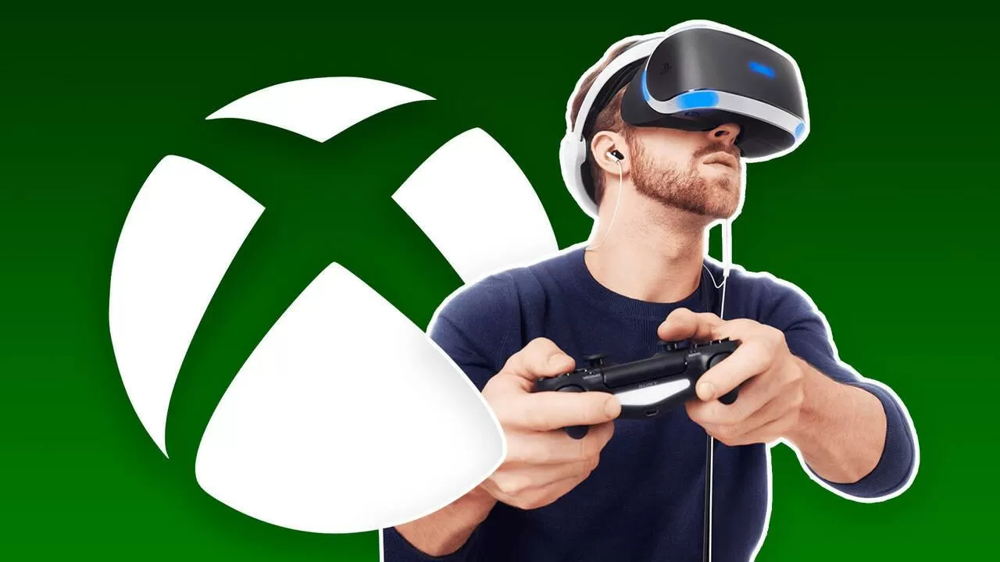
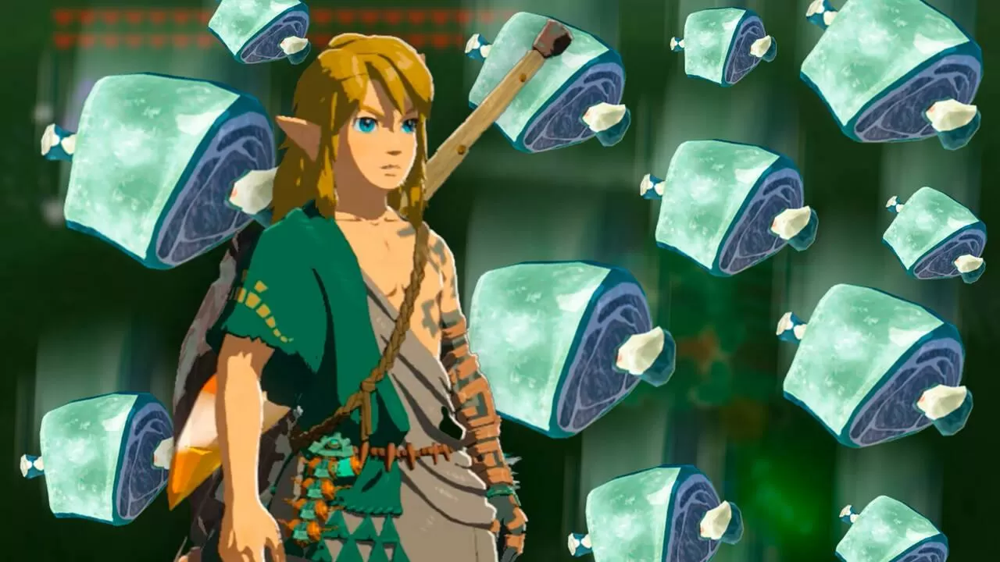
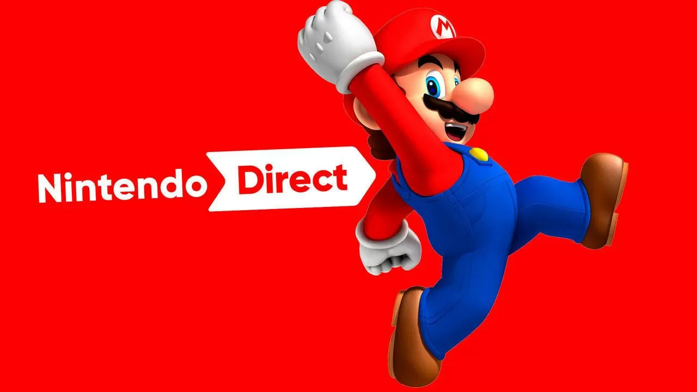

Tendencias
Manu Delgado
Juegos como Sea of Stars, Laika: Aged Through Bloodo o Sludge Life 2 tienen demo en PC por tiempo limitado con motivo del Steam Next Fest, que se celebra del 19 al 26 de junio.

Manu Delgado
Un nuevo documento de Microsoft recoge declaraciones censuradas de Jim Ryan, jefe de PlayStation, en las que habría admitido no temer una supuesta exclusividad de los juegos de Activision en Xbox.

Fran G. Matas
Matt Booty, responsable de Xbox Game Studios, asegura que el mercado de realidad virtual y realidad aumentada no tiene la suficiente audiencia todavía como para entrar en él.

Manu Delgado
El nuevo truco de Zelda: Tears of the Kingdom para volverse rico consiste en congelar carneDescubren un nuevo truco para conseguir rupias rápido en Zelda: Tears of the Kingdom.
Manu Delgado
Tras encargarse de establecer la división de juegos móviles de PlayStation Studios, Nicola Sebastiani se marcha de la compañía para 'perseguir una nueva oportunidad no revelada'.

Manu Delgado
Varias fuentes apuntan a que habría un Nintendo Direct esta misma semana, entre el 20 y el 23 de junio. Se anunciaría con poca antelación y se han filtrado los supuestos contenidos.